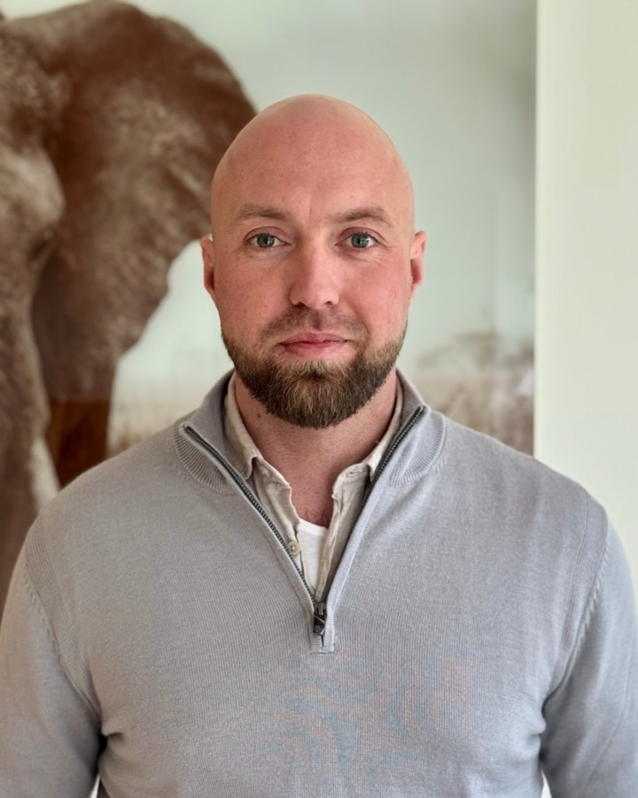

Wie ik ben en waarom ik dit doe
Ik ben Bas Streefkerk, uit Apeldoorn. Computers vond ik altijd al interessant, maar ik ben er via een omweg in terechtgekomen. Ik ben afgestudeerd als schipper binnenvaart en pas daarna de IT in gegaan.

Toen AI opkwam, ben ik het eerst voor mezelf gaan gebruiken. Al snel wilde ik meer weten dan alleen hoe je er een vraag aan stelt. Hoe werkt het op de achtergrond? Wat kun je er echt mee? Ik begon mijn eigen werk te automatiseren: mijn post, mijn administratie, mijn afspraken. Waar ik vroeger uren mee bezig was, gaat nu vanzelf.
Mensen in mijn omgeving zagen dat en vroegen of ik dat voor hen ook kon doen. Zo ben ik ook voor anderen gaan bouwen. Dat beviel zo goed dat ik er mijn werk van heb gemaakt.
Waarom ik dit doe? Omdat ik zie hoeveel tijd mensen kwijt zijn aan werk dat een computer ook kan doen. Die tijd besteed je liever aan je klanten, je vak of je gezin. Ik vind het mooi om dat voor iemand op te lossen.
Ik geloof dat een leven dat op Jezus gebouwd is stevig staat: het geeft rust, en het levert iets op. Dat zie ik in mijn eigen leven en bij de mensen om me heen. Die visie neem ik mee in mijn bedrijf en in onze samenwerking.
Vandaar de naam Cletos. Het komt van het Griekse klētos, "geroepen", de kern van het woord paraklētos.
Wat je van mij kunt verwachten: eerst luister ik hoe jij werkt. Daarna bouwen we samen iets dat past bij jouw bedrijf. En heb je later een vraag, dan bel je mij.
Bel of mail
Ik reageer binnen twee werkdagen.